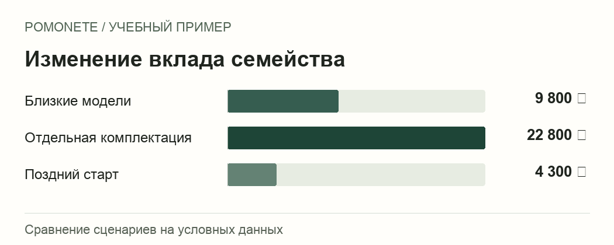

Как селлеру Яндекс Маркета оценить запуск товара, который заменяет старый
Считаем деньги на Яндекс Маркете после перетока части продаж между двумя близкими артикулами.
Магазин велодержателей продаёт на Яндекс Маркете базовую модель и запускает похожую. У новинки есть вклад с продаж, но часть покупок уходит от старого SKU. Селлеру важно понять, что получило всё товарное семейство, прежде чем переносить объём закупки.
Как оценить переток
Сохраните базовые продажи старого предложения по сравнимым дням. После старта посмотрите общий результат двух моделей и распределение внутри семьи. Потерянный вклад старой позиции оцените при одном уровне спроса и доступности. Зафиксируйте новый охват отдельно от замещения прежних продаж.
Чтобы пересобрать расчёт «Изменение вклада семейства» для своего магазина, перенесите в него исходные числа. В формуле A обозначает «вклад нового sku, ₽», B обозначает «добавка старого sku от охвата, ₽», C обозначает «потерянный вклад старого sku, ₽». Начальную величину и два направления движения фиксируют разными строками. Операция должна попадать в одно направление с корректным знаком. Запишите рядом период и охват каждого среза. Для оценочных строк оставьте пояснения рядом с исходными значениями. При чтении сводки будет видно, какие из них пока подтверждены.
Изменение вклада семейства = A + B − C
| Условие | Вклад нового SKU, ₽ | Добавка старого SKU от охвата, ₽ | Потерянный вклад старого SKU, ₽ | Изменение вклада семейства |
|---|---|---|---|---|
| Близкие модели | 28 400 | 3 100 | 21 700 | 9 800 ₽ |
| Отдельная комплектация | 32 200 | 4 500 | 13 900 | 22 800 ₽ |
| Поздний старт | 20 700 | 2 600 | 19 000 | 4 300 ₽ |

В сценарии «Близкие модели» в формулу подставляем вклад нового sku, ₽ = 28 400, добавка старого sku от охвата, ₽ = 3 100, потерянный вклад старого sku, ₽ = 21 700. Получается 9 800 ₽. Новая модель почти повторяет старую, и покупатель часто выбирает одну из двух.
В сценарии «Отдельная комплектация» в формулу подставляем вклад нового sku, ₽ = 32 200, добавка старого sku от охвата, ₽ = 4 500, потерянный вклад старого sku, ₽ = 13 900. Получается 22 800 ₽. Проверили предложение, которое дополнительно находят по другому запросу.
В сценарии «Поздний старт» в формулу подставляем вклад нового sku, ₽ = 20 700, добавка старого sku от охвата, ₽ = 2 600, потерянный вклад старого sku, ₽ = 19 000. Получается 4 300 ₽. Часть новых заказов не успевает сформироваться за окно запуска.
Если «Близкие модели» взять за исходную точку, «Отдельная комплектация» меняет показатель «изменение вклада семейства» на 13 000 ₽, а «Поздний старт» на -5 500 ₽. Между двумя последними строками разница составляет -18 500 ₽ при вычитании второй из третьей. Смотрите, какой именно вход изменился между строками. Если менялись объём и условия одновременно, итог сравнения относится ко всему сочетанию.
В пересчёте на исходное значение разница второй строки составляет 132,65%. Здесь в знаменателе модуль первого результата, 9 800 ₽. Для показателя в процентах рядом сохраните и абсолютную разницу в процентных пунктах. Для малого исходного значения процентный скачок может оказаться крупным даже при скромном практическом эффекте. В рабочем отчёте оставьте оба исходных значения, чтобы при расширении выборки можно было пересчитать изменение.
Почему мало денег из новой карточки
Товар мог купить человек, который бы иначе взял более доходную модель. Проверяйте сценарий падения старого артикула и долю заказов по общим запросам. Если новый товар занял складское место и ухудшил доступность лидера, внесите затраты изменения в отдельную строку.
Для исходной выборки пригодятся экономика заказов и собственная закупочная ведомость. Зафиксируйте строки и границы периода, по которым собирался показатель «изменение вклада семейства». Копию выгрузки держите рядом с рабочим расчётом. По ней коллега сможет проверить, что строку отнесли к нужному сценарию, а единица измерения сохранилась при переносе.
Выгрузка маркетплейса даёт начисления по операциям. Собственную стоимость закупки, труд и расходники подставляют из учёта магазина с датой действия. Для решения по ассортименту разделите повторяющиеся переменные расходы, затраты на запуск и текущие фиксированные расходы команды. После изменения предложения обновляются и продажи соседних изделий. Счёт по одному товару имеет смысл дополнить итогом той группы, между вариантами которой может переключиться покупатель.
Что сильнее всего меняет результат
Возьмём сценарий «Отдельная комплектация» с результатом 22 800 ₽. В нём последовательно изменим «вклад нового sku, ₽», «добавка старого sku от охвата, ₽», «потерянный вклад старого sku, ₽». Для каждого входа шаг близок к 10% его исходной величины, целые значения округлены. После каждого опыта возвращаем остальные числа к исходным. Так можно выяснить, какой вход уточнять первым, если перед решением мало времени.
- «Вклад нового SKU, ₽» меняется с 32 200 на 35 420. При прежних остальных входах получается 26 020 ₽, сдвиг составляет 3 220 ₽.
- «Добавка старого SKU от охвата, ₽» меняется с 4 500 на 4 950. При прежних остальных входах получается 23 250 ₽, сдвиг составляет 450 ₽.
- «Потерянный вклад старого SKU, ₽» меняется с 13 900 на 15 290. При прежних остальных входах получается 21 410 ₽, сдвиг составляет -1 390 ₽.
При выбранных шагах параметр «вклад нового sku, ₽» дал самый крупный сдвиг величиной 3 220 ₽. Если в магазине эта величина меняется в узком диапазоне, подставьте обе его границы. Для связанных условий добавьте отдельную строку с одновременным изменением входов и поясните их связь в примечании.
Расчёт полезно повторить по неделе, когда рыночная цена старой модели не менялась. Если разница исчезает при прежней цене, источником эффекта был ценовой порядок, а не выход новой карточки как таковой. Это меняет очередность следующих действий.
Как назначить объём второй партии
Закажите небольшую повторную партию с учётом вклада обеих моделей, пока не нормализуется наличие. Если общий результат низкий, проверьте уникальные варианты комплектации и различия в цене. Для решения о выводе старого SKU понадобится наблюдение после первого рекламного запуска.
Поставьте рядом плановую и фактическую строки сделки с сохранённой себестоимостью. Проверку удобнее начинать с позиций, на которые приходится основной вклад, потом выделять случаи с нестандартной логистикой, возвратом или разовой скидкой. Если после смены состава продаж средняя величина улучшилась, восстановите исходные веса и оцените, сколько прироста действительно получилось на сопоставимых позициях.
Оставьте в рабочей таблице причину выбора. Когда селлеры Яндекс Маркета возвращаются к расчёту «изменение вклада семейства», им пригодятся полученное значение, ответственный и дата пересмотра. Если в решении использовался сценарий «Отдельная комплектация», перенесите вместе с ним допущения. При обновлении источников сначала проверьте одну исходную строку и только потом пересчитывайте сводку.